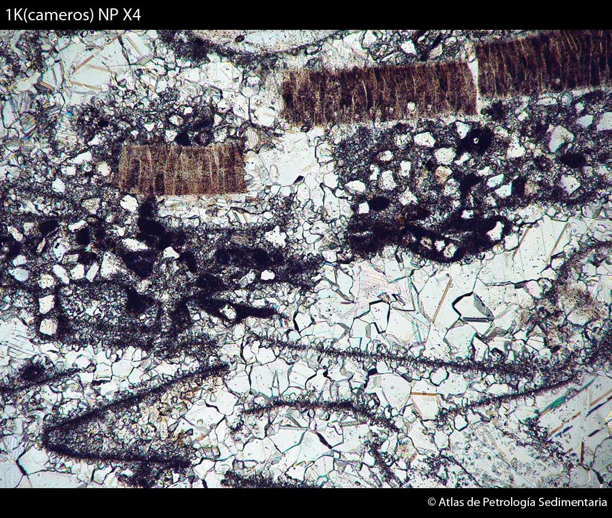
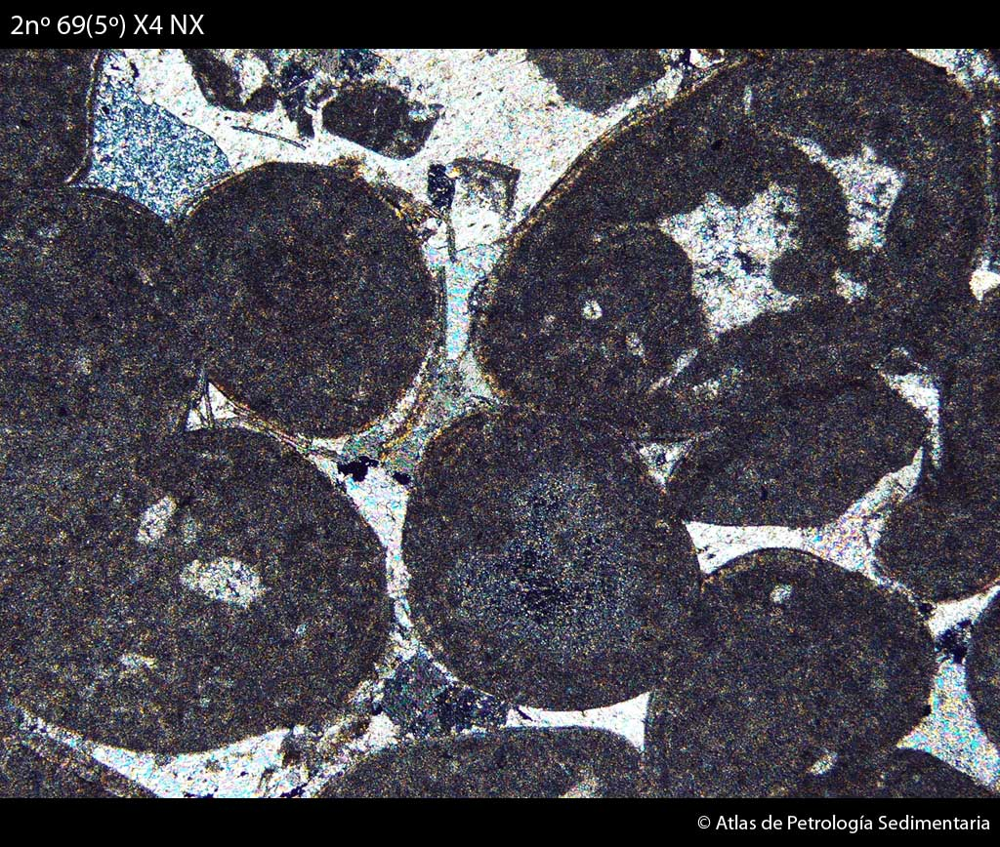
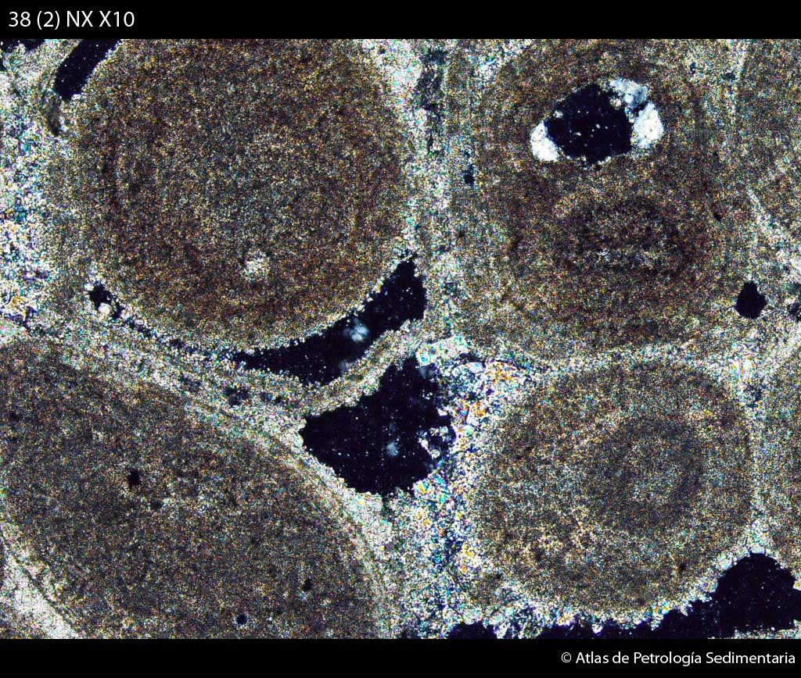
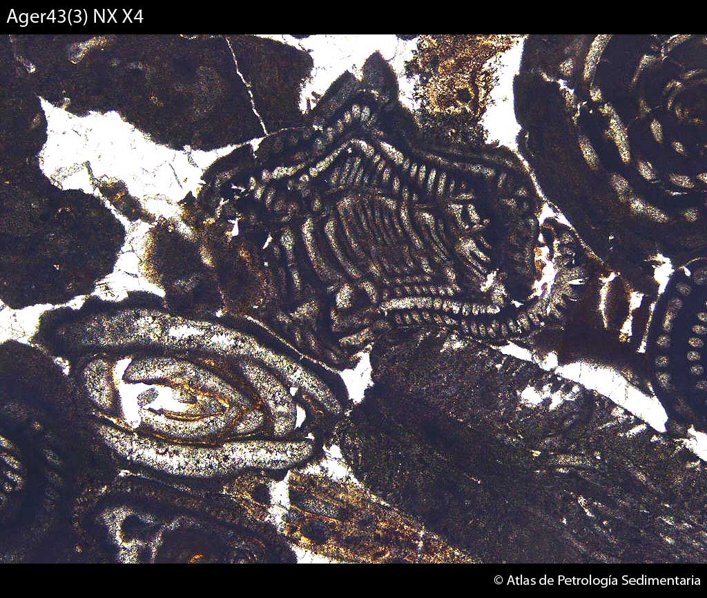
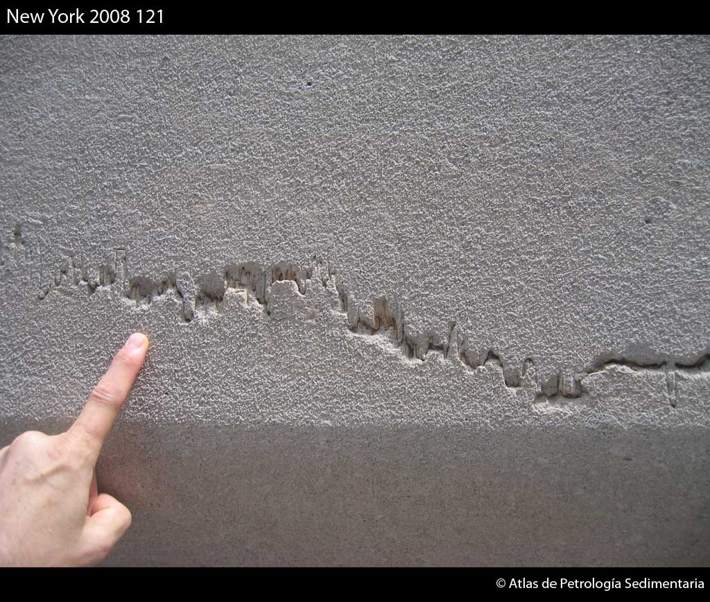
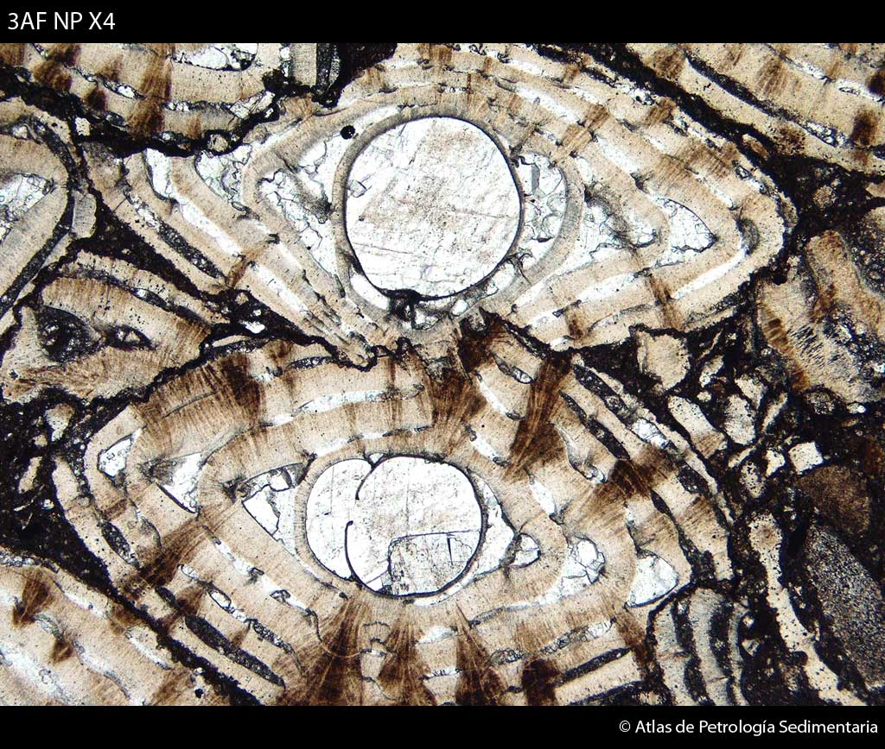
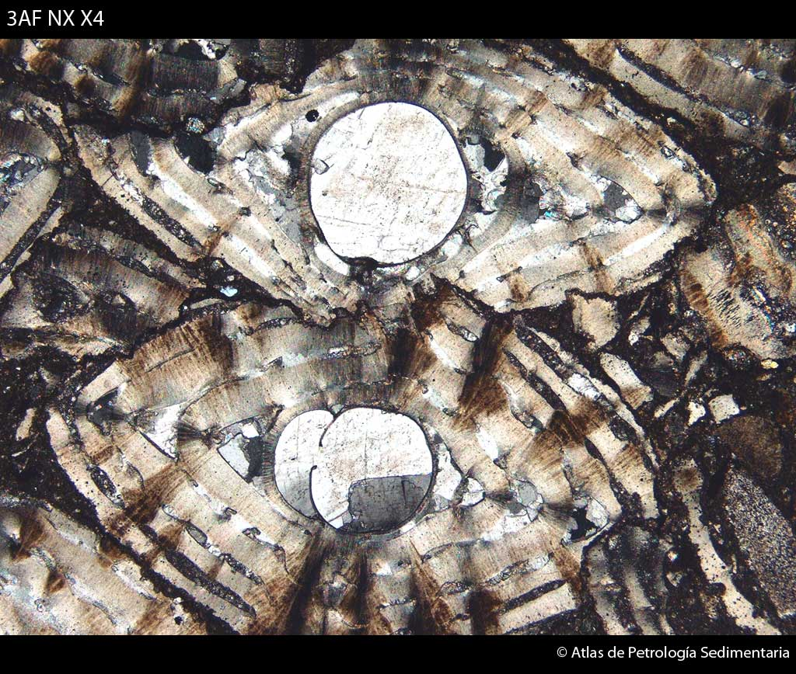
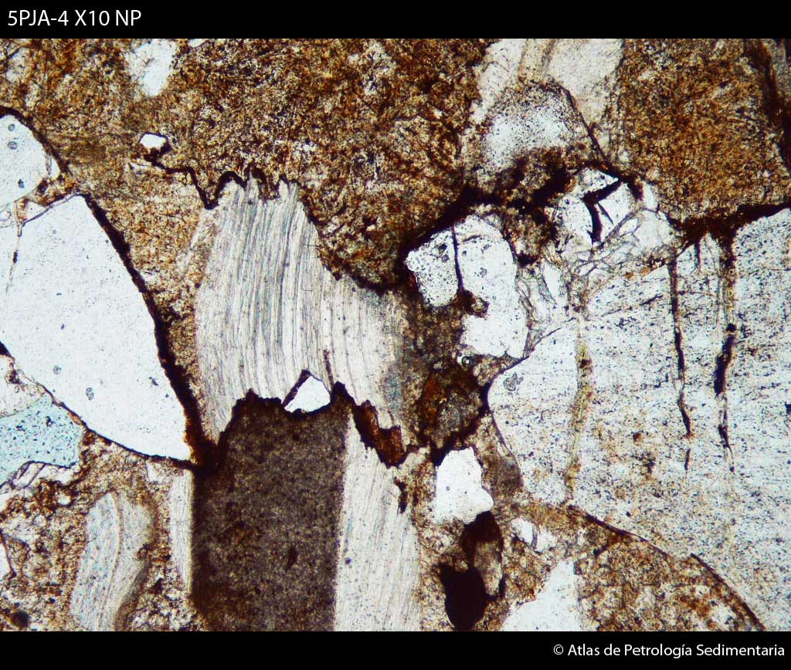
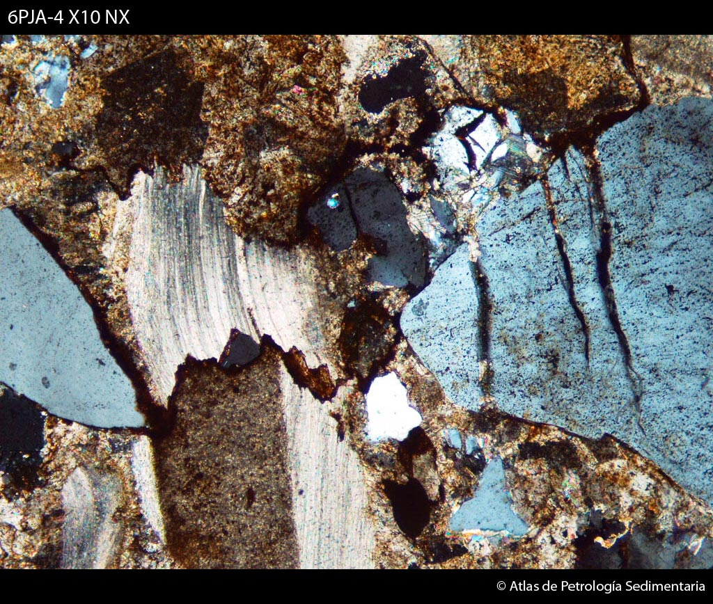

Rocas carbonáticas
Compactación
Es el conjunto de procesos mecánicos y químicos (presión-disolución) que, como consecuencia del enterramiento, provocan la disminución del espesor del primitivo sedimento y la reducción de la porosidad. Se diferencia entre compactación mecánica y compactación química.
Compactación mecánica
Se produce en los primeros estadios del enterramiento y sus consecuencias fundamentales son: reordenación de los granos individuales, expulsión de agua, deformación de granos dúctiles (peloides, intraclastos, etc.) y rotura de los frágiles, y aplastamiento de aspectos sedimentológicos (burrows, porosidad fenestral, etc.).

Grainstone en el que se observan envueltas micritizadas de
bioclastos fracturadas por compactación mecánica. La compactación
mecánica postdata la primera generación de cemento (Ar acicular en origen), y es anterior a la segunda generación en mosaico de LMC, que cierra totalmente la porosidad.
Fm. Torrecilla. Jurásico terminal (Kimmeridgiense). Cordillera Ibérica. Renieblas (Soria).
AF = 3 mm. NP.

Grainstone oolítico con importante reducción del espacio
intergranular por compactación. Las envueltas corticales de los oolitos
están fracturadas y selladas por un cemento en mosaico grueso de LMC, postdatando la compactación mecánica.
Jurásico. Cordillera Ibérica. Sierra Palomera (Teruel).
AF = 3 mm. NX.

Grainstone con las envueltas corticales de oolitos fracturadas por compactación mecánica.
PSII - 38.
AF = 3 mm. NX.

Grainstone con las envueltas corticales de oolitos fracturadas por compactación mecánica.
PSII - 38.
AF = 3 mm. NX.
Compactación química (presión-disolución)
Se produce a continuación de la compactación mecánica, durante el enterramiento profundo. Se origina como resultado de la presión concentrada en puntos de contacto entre: granos, cristales o grandes superficies (estratos), lo que incrementa la solubilidad de los carbonatos. La consecuencia es el desarrollo de contactos cóncavo-convexos y suturados entre granos, y la aparición de superficies estilolíticas a gran escala.

Superficie estilolítica desarrollada en un grainstone.
Fachada de un edificio en Wall Street (Nueva York)..

Grainstone bioclástico con detalle de contactos estilolíticos entre Nummulites, e importante reducción del espacio intergranular, como respuesta a la compactación química.
Fm. Caliza de Tavertet. Eoceno. Depresión Central Catalana. Tavertet (Barcelona).
AF = 3 mm. NP.

La imagen anterior, 3AF, con nícoles cruzados. Porosidad intrapartícula rellena por un mosaico de calcita (LMC).
Fm. Caliza de Tavertet. Eoceno. Depresión Central Catalana. Tavertet (Barcelona).
AF = 3 mm. NX.

Detalle de superficie estilolítica (compactación química) en grainstone-packstone bioclástico.
Cretácico inferior (Aptiense). Cordillera Ibérica. Grávalos (La Rioja).
AF = 1mm. NP.

La imagen anterior, 5PJA-4, con nícoles cruzados. Porosidad intrapartícula rellena por un mosaico de calcita (LMC).
Cretácico inferior (Aptiense). Cordillera Ibérica. Grávalos (La Rioja).
AF = 1mm. NX.